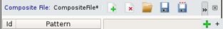

To access: From a Calibre WORKbench menu bar, Litho> LSG Layout Generation, or from a Calibre WORKbench Tcl shell call—see “Invoking Calibre LSG from a Tcl Shell Call”.
Click the Rule Editor tab.
Use this tab to input Calibre LSG rules, priority (weight) settings, and unit pattern information. This window mode is the same as the Calibre LSG main GUI.
Object |
Description |
|---|---|
A |
Rule File pane — Use to perform rule file actions and display rule information. Definitions (left to right):
|
B |
Unit Cells pane — Use to define and drag‑select unit cells for placement in the Rule Grid and Composite Grid. Definitions (top to bottom):
|
C |
Rule Grid pane — Use to perform unit cell placement on a grid and display relative placement information. Definitions (left to right in pane):
|
D |
Priority File pane — Use to create, import, and save priority (weights) for unit cells and rotations to a file. Definitions (left to right):
|
E |
Composite File pane — Use to create, import, and save composite patterns to a file. Definitions (left to right): 
|
F |
Composite Grid pane — Use to perform unit cell placement on a grid and create and display composite patterns. Definitions (left to right):
Definitions (left to right):
|
For a description of the argument options and the format of imported files, see “calibre -lsg” and “Calibre LSG File Formats”.